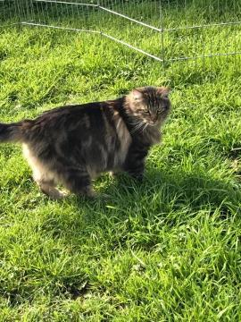
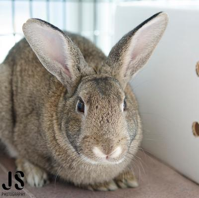
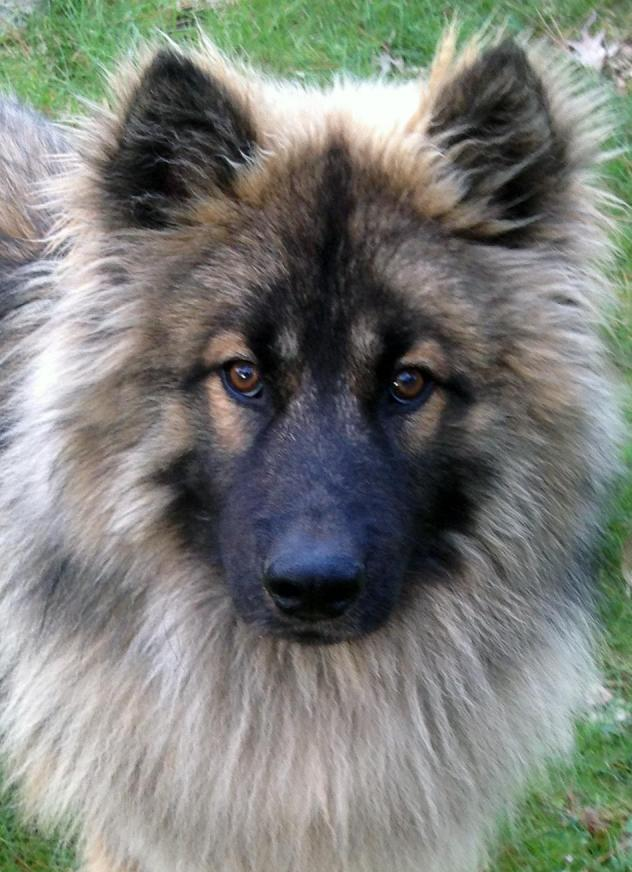
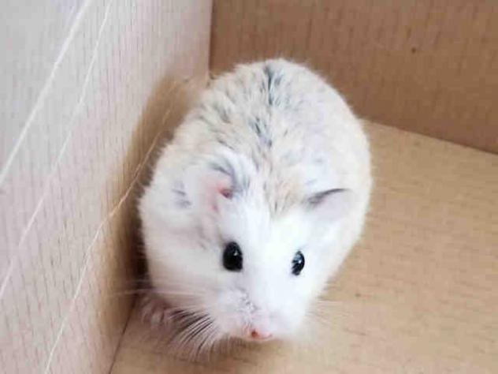
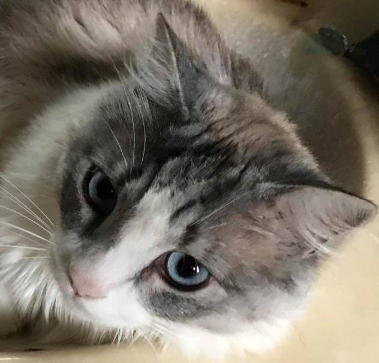
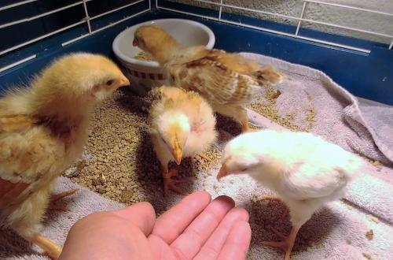
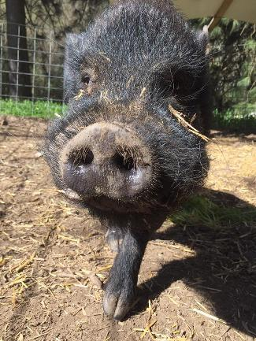
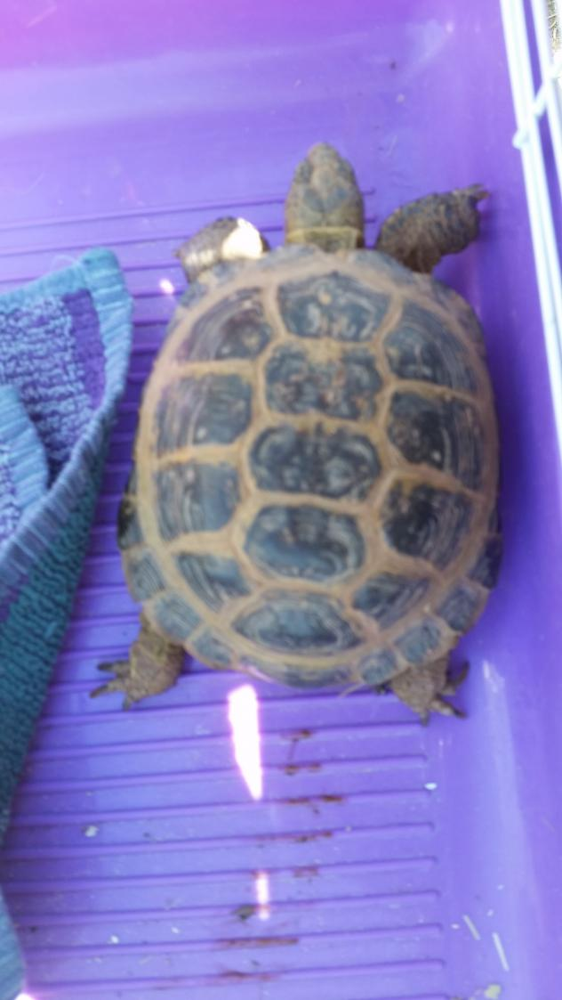
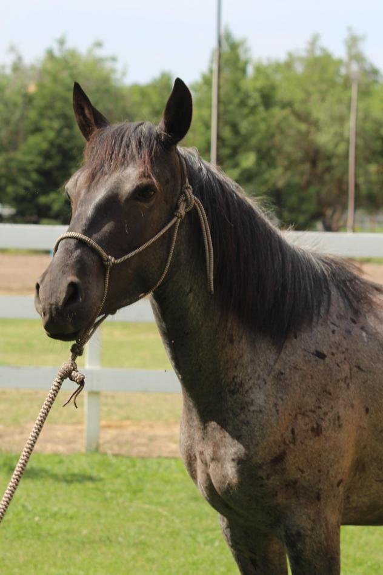

Adopt Me!

Mochachino
Cat • Maine Coon • Adult • Male • Large
Mocha is affectionate and loving, always coming to greet you and occasionally being a lap cat for a cuddle. But he's not 'needy' - as a daytime-outdoor cat coming from a multiple pet / person home, he is independent and very comfortable joining your crew...

Robbie
Rabbit • American • Adult • Male • Medium
Hello, I am Robbie. I'm a mellow guy who warms up slowly and has a hidden affectionate side that takes time to come out. I'm very curious about new things and always enjoy exploring during play time...

Finnegan
Dog • Keeshond • Young • Male • Medium
My name is Finnegan, and I’m such a clever boy! I tricked BARK volunteers into thinking that I could be a Keeshond! Ha ha ha ha! I was disguised in my shelter photo, so they drove all the way out into the Central Valley to meet me. When they arrived at the shelter, they could see right away that I’m not a purebred Keeshond...

Dimitri
Hamster • Adult • Male • Small
TRI-CITY ANIMAL SHELTER
(510) 790-6640
1950 Stevenson Blvd.
Fremont, CA 94538
animalservices@fremont.gov

Miso
Cat • Siamese • Adult • Male • Large
I was adopted as a kitten and loved and cared for by a nice couple. Unfortunately they split up, and though I had a home with one of them, that person decided that I no longer fit his lifestyle...

Five Baby Chicks
Chicken • Baby • Male • Medium
'Peep' 'Peep' 'Peep' We're 5 baby chicks and we're happy to see you! We're a chatty bunch of babies that love to run, play and eat! Come and meet with us: Tyrannosaurus Pecks, Heidi Plume, Sir Cluckington, Annie Yolkley & Marry Cluckings.

Hieronymus
Pig • Adult • Male • Medium
Hieronymus came to us in '13 as a stray pig that had needed rescue from a shelter. He found a family very quickly but due to circumstances beyond their control,they recently lost their country home and are no longer able to keep him. ; We had initially thought that he was a pot bellied pig, but as he matured he grew to look more like mini-pig mix of sorts.

Volcheck
Tortoise • Russian • Young • Unknown • Small
Hieronymus came to us in '13 as a stray pig that had needed rescue from a shelter. He found a family very quickly but due to circumstances beyond their control,they recently lost their country home and are no longer able to keep him. ; We had initially thought that he was a pot bellied pig, but as he matured he grew to look more like mini-pig mix of sorts.

Blue Sky
Horse • Mustang • Young • Female • Large
Blue Sky is ready to find her forever home. She is a four year old, 14 hand high Mustang filly. She came to us from the sanctuary in Northern California. She is a very sweet loving girl and truly enjoys people. She is halter broke and trailers. She still startles easy so she needs a lot more desensitizing, but she seeks out the company of people and loves to be touched.
{kind=link}
{kind=link}
{kind=link}
{kind=link}
{kind=link}
{kind=link}
{kind=link}
{kind=link}
{kind=link}